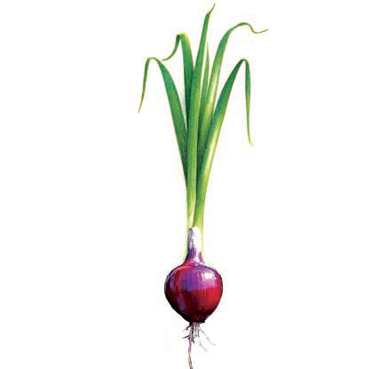
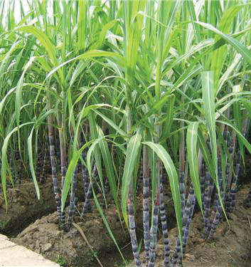

Kitunguu

Miwa
Kielelezo namba 20:Mimea inayohifadhi chakula kwenye shina
Majani
Kazi ya majani ni kutengeneza chakula cha mmea.Majani ya mimea yana vitundu vidogo vinavyoitwa stomata.Stomata hufunga na hufunguka ili kudhibiti kiwango cha maji katika mmea.Pia, huruhusu gesi ya oksijeni na kabonidayoksaidi kuingia na kutoka kwenye mmea.